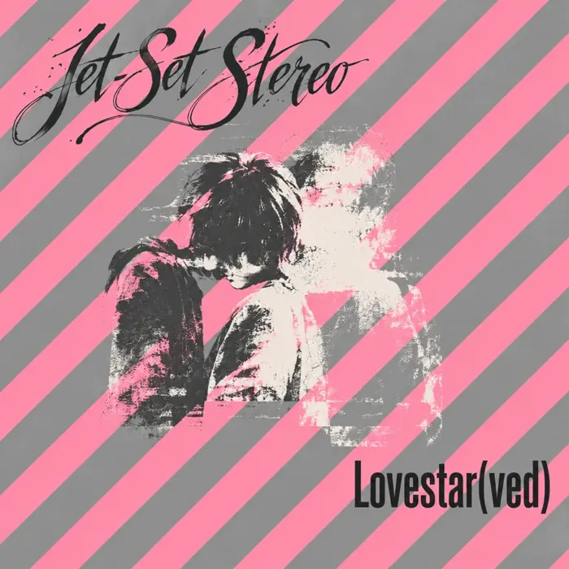
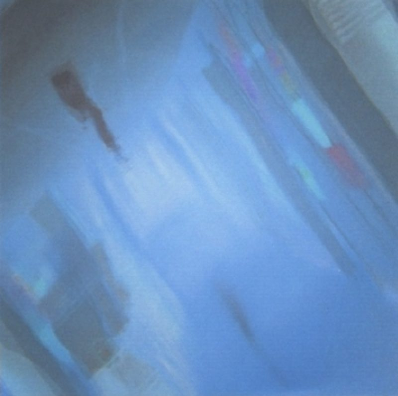
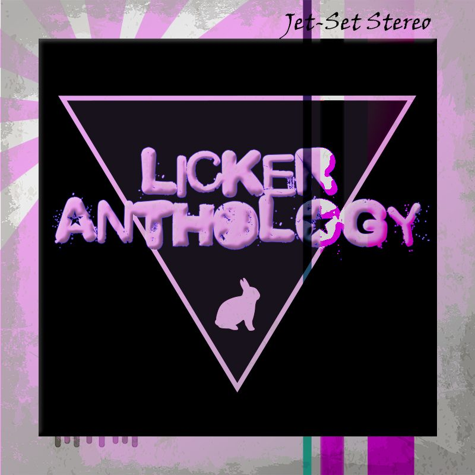

THE DOOR WAS OPEN
The
Record Room.
Different names.
Some of the same ghosts.
The recordings of Counterweight, Jet-Set Stereo, LICKER, and Aeris Mandrake. From bedroom tapes to the songs they became.
FLIP THROUGH THE RECORDS ↓
JET-SET STEREO / 2006
JET-SET STEREO / 2004
LICKER ANTHOLOGY / 2017 please put them backin whatever order.
THE COLLECTION
Everything that stayed.
No records found. Try another title, artist, or release type.
An ongoing collection. Approximate dates are marked “c.”; undated releases sit at the end. Some early records have new archive artwork.
A NOTE LEFT IN THE ROOM
Some songs
take the long way home.
These recordings were made under different names, in different rooms, over more than twenty years. Some became albums. Some waited in folders. Some turned up again with different words, different voices, or a different reason to exist.
This room brings those releases together. Open a sleeve for the recordings, credits, and connections we’ve recovered so far.
Start with Owns Your Brain (2004) →